Developing python code#
Python is an open-source scripting language that has found huge appeal across a wide range of applications including web and internet development, database management, network programming and education. It has also became the default choice for scientific and numerical programmers all over the world. See here for more information.
The easiest way to start coding in Python is to simply start at a terminal command line. E.g. from a Mac OS terminal.
% python3
Python 3.14.0 (main, Oct 7 2025, 09:34:52) [Clang 17.0.0 (clang-1700.0.13.3)] on darwin
Type "help", "copyright", "credits" or "license" for more information.
>>> print ('hello world')
As straightforward as this is, trying to build complicated scripts and projects purely from a terminal is difficult. Typically, we will start writing our Python script in a text editor, and then execute this script (or sections of it) inside a python session to produce our desired outputs.
To help do this, there is the `IPython’ tool.
IPython - or Interactive Python.#
IPython is a powerful interactive shell that also provides the underpinnings of python Jupyter notebooks. While python notebooks are a fantastically powerful tool, they come with require large overheads and can sometimes promote bad programming practices.
Jupyter notebooks are fantastic for visualisation and for creating workflows. But if you are building code from scratch, we recommend using IPython.
The advantages of using IPython over a standard Python session are numerable, and include:
Smart autocompletion and tab completion to find function names, object methods/attributes and file paths within your code
‘magic’ commands (prefixed with
%) that provide extra functionality such asShell integration using
bashcommands (e.g.ls,pwd) so you don’t have to swap from your python session to a shell terminal.Syntax highlighting and output formatting.
IPython is installed with any of the standard analysis3 environments on gadi. On a terminal type ipython after loading your xp65 analysis3 environment.
$ ipython
Python 3.11.13 | packaged by conda-forge | (main, Jun 4 2025, 14:48:23) [GCC 13.3.0]
Type 'copyright', 'credits' or 'license' for more information
IPython 8.37.0 -- An enhanced Interactive Python. Type '?' for help.
In [1]: ls
logger_test.py sample.py
If you are running on your own laptop or PC, you will need to install IPython yourself.
Documentation for IPython is available here, which includes some tutorials and installation instructions.
So we can quickly develop python code by writing a script in a text editor and executing the whole script inside IPython using %run, or we can paste multiple blocks of code into IPython and check the values of the variables.
As an example, you can clone the repository 21centuryweather/software_engineering_demos and open the file CoE_workshop_2025/scripts/data_processor.py in a text editor (or a web browser) and copy the script into an IPython session.
In [7]: import time
...:
...: def process_data(data_list):
...: """
...: Simulates a data processing task.
...: """
...: total = sum(data_list)
...: # Simulate a time-consuming operation
...: time.sleep(0.01)
...: average = total / len(data_list)
...: return total, average
...:
...: if __name__ == "__main__":
...: test_data = list(range(10000))
...: start_time = time.time()
...: result_sum, result_avg = process_data(test_data)
...: end_time = time.time()
...:
...: print(f"Data processed: {len(test_data)} items")
...: print(f"Total Sum: {result_sum}")
...: print(f"Average: {result_avg:.2f}")
...: print(f"Execution Time (Standard): {end_time - start_time:.4f} seconds")
...:
Data processed: 10000 items
Total Sum: 49995000
Average: 4999.50
Execution Time (Standard): 0.0126 seconds
Or you can execute the entire script by providing the path to the %run magic command, e.g.
In [1]: %run ~/code/software_engineering_demos/CoE_workshop_2025/scripts/data_processor.py
Data processed: 10000 items
Total Sum: 49995000
Average: 4999.50
Execution Time (Standard): 0.0102 seconds
We can run other ‘magic’ functions, e.g.
In [3]: test_data = list(range(10000))
In [4]: %timeit process_data(test_data)
10.3 ms ± 10.3 μs per loop (mean ± std. dev. of 7 runs, 100 loops each)
And inspect the variables in the script, e.g.
In [6]: type(test_data)
Out[6]: list
In [7]: test_data[:5]
Out[7]: [0, 1, 2, 3, 4]
But is there a way to improve this workflow further? Can we integrate our script editing with a current python session?
Using VSCode as an Integrated Development Environment#
The Software Engineering community has developed ‘Integrated Development Environments’ (IDEs) for decades. Typically these are software packages that include
A text editor for writing code
File explorers to track files and libraries required for a software projects
A command line terminal for executing code
A graphical debugger, for interrogating code in a forensic, line-by-line method.
If you’ve ever used MATLAB, such an IDE will be familiar to you.
For Python, there are various options available (e.g. PyCharm) but for this Wiki entry, we are going to cover the popular Microsoft Visual Studio Code (VSCode).
VSCode has become very popular as
It’s free
Can run on Windows, Linux or Mac
Is open source, so the software community has written a huge array of plug-ins and add-ons to customise VSCode for any application (e.g. spell checkers, LaTeX plug-ins to build .pdf documents etc.)
To download and install VSCode, visit this link. You will also want to install this Python Extension to give you lots of nice Python features which we will discuss below.
Once you can open VSCode on your own machine, you can read the getting started documents, and this link if you are having trouble installing the Python extension. VSCode also contains its own set of Python docs and tutorials to help you use some of its features.
Let’s load the file 21centuryweather/software_engineering_demos into VSCode. Typically in VSCode you will want to open the parent directory of your software project, so you can view and access all source code files from the File Explorer at the left of the VSCode window.
Note
You can open a directory from the menu File -> Open Folder… or you can use short-cut keys Ctrl+K Ctrl+O (or Cmd+K Cmd+O on Mac).
But, the best way to find how to do something in VSCode is to open the Command Palette using Ctrl+Shift+P (or Cmd+Shift+P on Mac) and type what you want to do. The Command Palette will provide a list of options that match your search.
So once you’ve added the CoE_workshop_2025 folder to VSCode, click on the menus on the left to load mean_air_temp.py. Your window should look something like this.
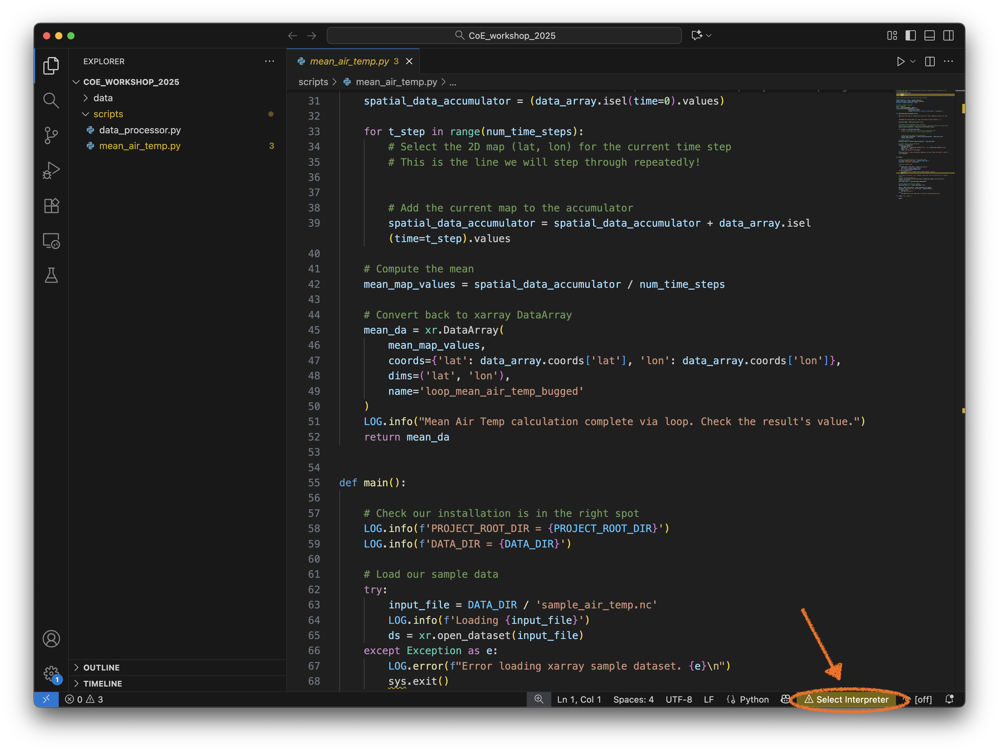
Note the warning on the bottom right of the window ! Select Interpreter. Let’s click on that and choose a Python interpreter installed on you machine. VSCode should be clever enough to search your shell PATH for various Python interpreters, depending on which environment and package manager you are using (e.g. conda). I will choose the interpreter that corresponds to my Python 3.10 conda environment.
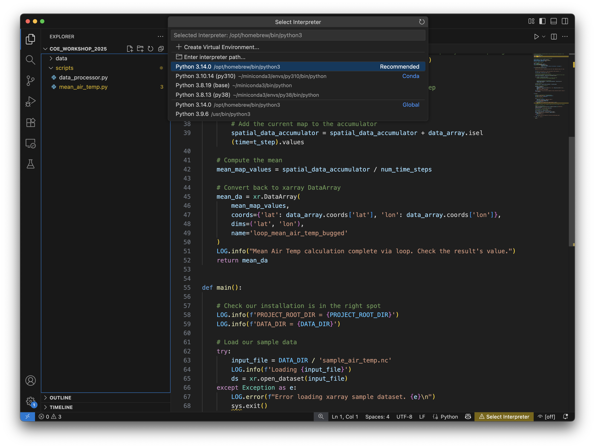
Your choice of Python interpreter will now be active on bottom-right.
Linting#
Let’s have a look at the pretty syntax highlighting in the source. If your scroll down to Line 68, you’ll see the sys.exit has a small yellow squiggle underneath it. The ‘Linter’ which is present in your VSCode Python extension has automatically spotted an error in this code!
If you hover your cursor over the yellow squiggle, a Pylance pop-up menu appears. You can click on the View Problem portion of the pop-up menu and it will specify the error.
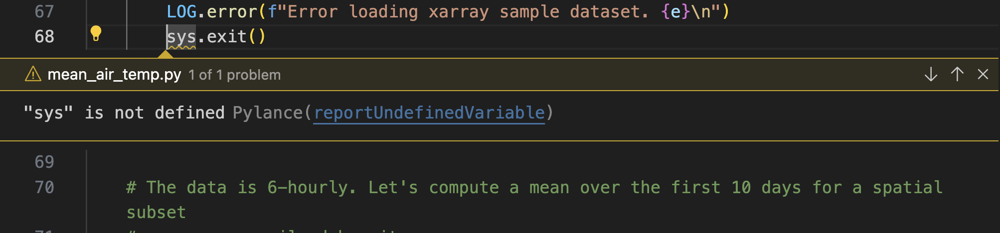
If you click on Quick Fix portion (or use the suggested keyboard short-cut) you will activate another menu.
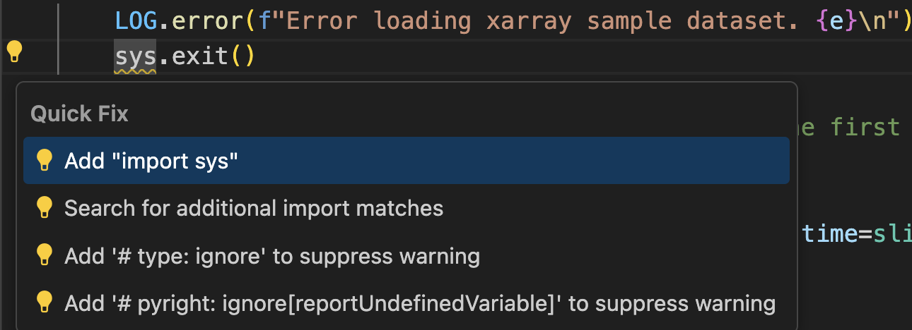
Note you can jump straight to the Quick Fix menu by clicking on the yellow squiggle, which will activate the yellow flashbulb next to the column numbers.
If you click on Add "import.sys" inside the Quick Fix menu, the Linter will automatically add import sys to line 4 of the source file.
Linting is an automated, interactive analysis of your source code to identify errors. It will work as you type, which is fantastic when you are writing code in a rush. See this Microsoft Linting Video for further information.
Let’s try writing a new function in our code to see how linting works in realtime.

If we forget to place a : at the end of the function name, a red squiggle will appear. We can click on this to use the menus to diagnose the problem, or just insert the : ourselves.
I want to write a for loop and use the range command to provide an iterator. Note the linter will provide auto-completions for Python built-ins functions and provides on-the-fly docstrings if you need to access it.
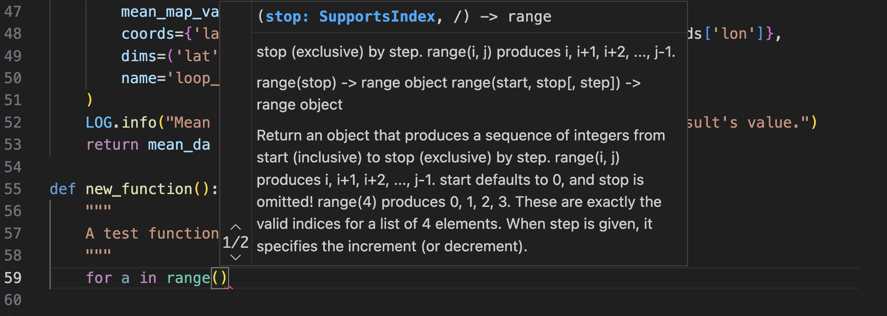
Note as you type
print(f'a = {a}')
The linter will:
provide a
tabautocomplete option for theprintstatement.Automatically provides pop-up docstrings for
printAutomatically provides matching pairs of brackets
(), braces{}and single quotes''.
If you eliminate any of these pairs of syntax, the linter will highlight the offending item in red. Hovering over the red squiggle will generate the Pylance diagnosis and suggested fix.
Another handy function of linting is the ability to quickly navigate your code. In the main function we call a function calculate_mean_loop. If you hover over the function name, the linter will bring up the function docstring in a pop-up menu.
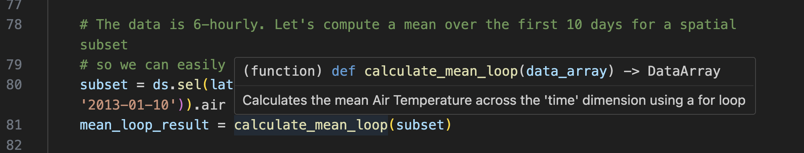
If we want to see the definition of this function without scrolling, simply right-click on the name of the function and select Go to Definition. The Python extension will automatically take you the section of the source file where calculate_mean_loop is defined. Imagine how useful this is for navigating a long text file. And imagine how useful this is when working in software project with multiple source files, as this function works across your entire filesystem!
As an example, go the line where we call the xarray function open_dataset and use the same functionality to find the definition. A new source code file will appear which represents the underlying xarray source code!
Finally, let’s run the example file. Firstly, let’s do this inside an IPython session. Your output should resemble this.
In [13]: %run mean_air_temp.py
....
2025-11-14 16:53:23,475:__main__:INFO: Calculating Mean Air Temp using explicit time iteration...
2025-11-14 16:53:23,488:__main__:INFO: Mean Air Temp calculation complete via loop. Check the result's value.
2025-11-14 16:53:23,493:__main__:INFO: Mean delta b/w two methods = 6.6442790031433105
2025-11-14 16:53:23,493:__main__:INFO: Check your algorithm in function calculate_mean_loop
But we can also execute this function inside the VSCode IDE!.
Firstly, we can click on the ‘Play’ button in the top-right of the VSCode window. 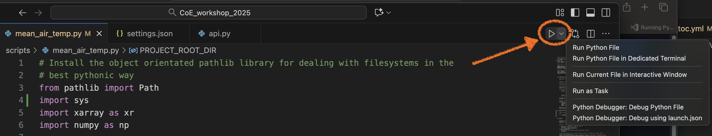
Or, we can highlight every line of code with our mouse, right-click, and the selection Run Python-> Run Python File in Terminal.
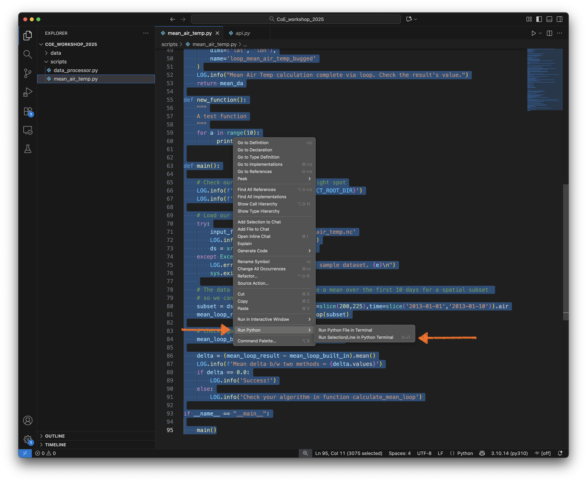
This will open a Python terminal in the lower section of the VSCode window, which will activate your Python interpreter you chose earlier, and then execute the script. 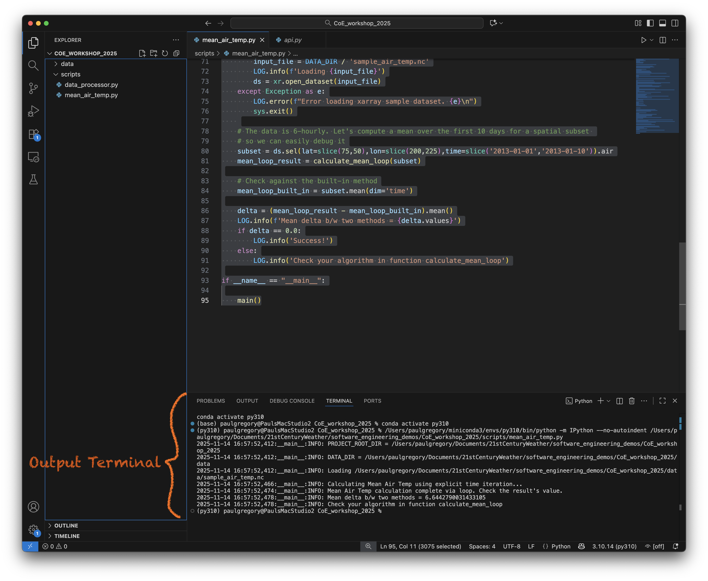
Note - we can also execute select lines of code. Let’s highlight the first few lines of code and then hit Shift->Enter from your keyboard. An interactive Python terminal will then open in the lower half of the VSCode window.
Wonderful! You now have an integrated development environment, where you can write and execute code in the same application window.
See the official docs for further examples.
Note
Attempting to execute the following line in the interactive terminal
SCRIPT_DIR=Path(__file__).parent.resolve()
will fail with message
NameError: name '__file__' is not defined. Did you mean: '__name__'?
This is because the global variable __file__ is not defined when we use an interactive shell. It won’t work inside a Jupyter notebook either. So if you are interactively working on a script which uses this variable, you should substitute a full path for SCRIPT_DIR, e.g. enter:
SCRIPT_DIR=Path('/My/Actual/Path')
Setting up IPython inside VSCode#
Note that VSCode will launch an interactive python session using your interpreter of choice. In my example, VSCode executed:
conda activate py310
(base) paulgregory@PaulsMacStudio2 CoE_workshop_2025 % conda activate py310
(py310) paulgregory@PaulsMacStudio2 CoE_workshop_2025 % /Users/paulgregory/miniconda3/envs/py310/bin/python
Python 3.10.14 (main, May 6 2024, 14:42:37) [Clang 14.0.6 ] on darwin
Type "help", "copyright", "credits" or "license" for more information.
Cmd click to launch VS Code Native REPL
>>> from pathlib import Path
>>> import sys
>>> import xarray as xr
..
etc
But wait, you said earlier that IPython was superior for interactive coding? (It is). Can we get VSCode to launch an interactive IPython session instead of a standard Python one?
Yes we can. What we need to do is adjust the Python launch settings inside VSCode. To do this, we can:
Click on the tool gear/cog on the bottom left of the VSCode window and select `Open Command Palette 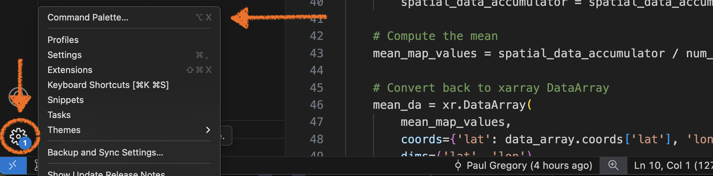
Or press
Ctrl+Shift+P(orCmd+Shift+Pon Mac)
Once the Command Palette is open, type Preferences: Open User Settings (JSON) (this should autocomplete.)
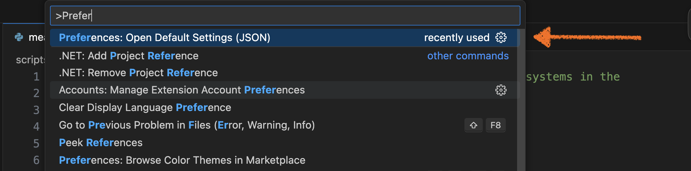
Search for the "python.terminal.launchArgs" section and add the following:
"python.terminal.launchArgs": [
"-m",
"IPython",
"--no-autoindent",
],
While you are there, you can insert the following:
"ipython.startupCommands": [
"%load_ext autoreload",
"%autoreload 2"
],
This link explains the benefit of using these commands.
Now if you exit and re-launch VSCode, you should be able to interactively execute lines of your script using an IPython window. 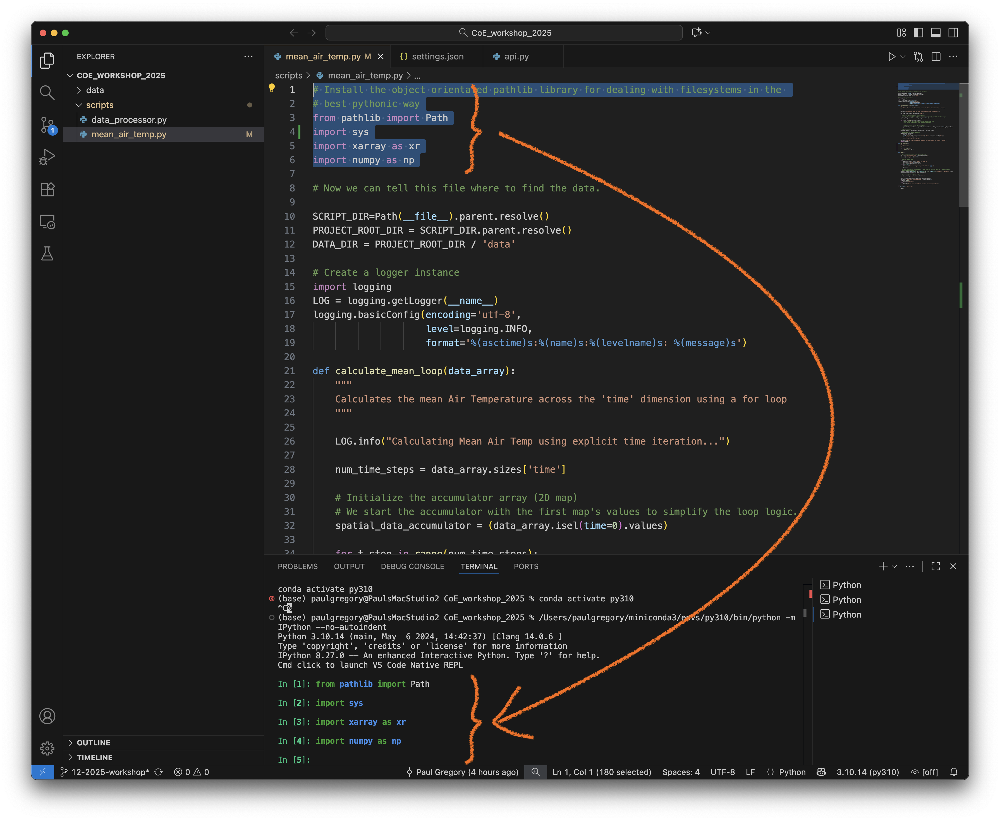
Success!
If you are interested in running further down rabbit warren of integrated, interactive Python coding inside VSCode, have a read of the official Python Interactive docs here.
Viewing git commits inside VSCode#
VSCode also comes with an integrated source control viewer which allows you to track the progress of your git project inside the IDE.
Click on the source control button on the right task bask and it will produce a graph of the source showing all branches, merges and commits.
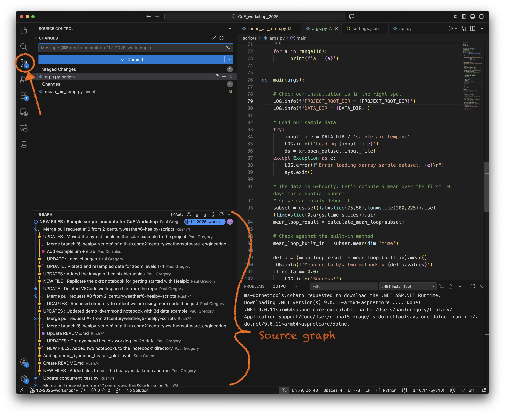
You can also add and commit files (with it corresponding message) in the Changes panel (above the Graph section ), so you don’t need to exit your VSCode session and use a terminal to manage your local repository.
VSCode also allows you to visually inspect and amend your code when merging conflicts, see below for an example.
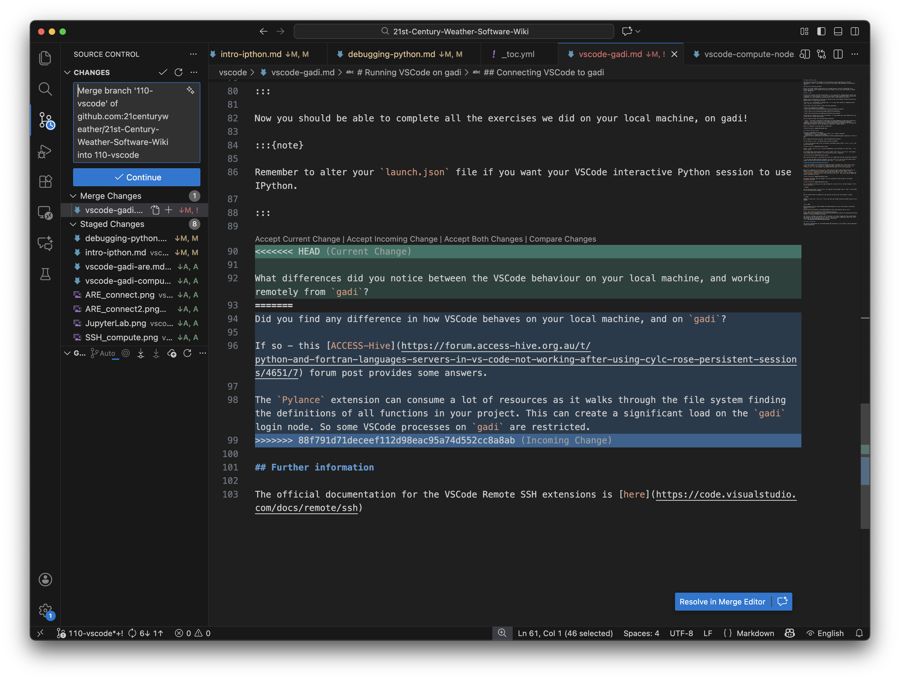
See the official docs here for more information.